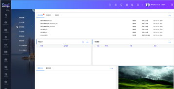
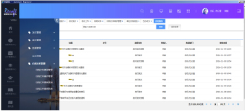
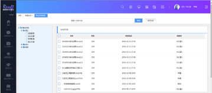
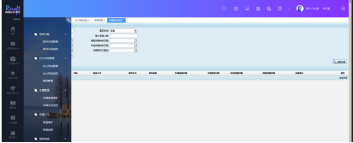
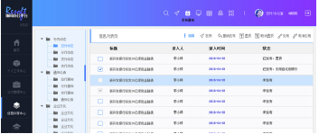
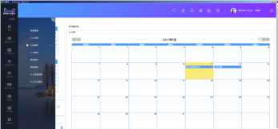

基于企业级工作流程引擎，是一款具备Web端数据建模工具、拖拽式页面设计工具和流程设计工具的集成型、智能流程协作平台。
随着技术的进步、竞争的加剧、工作方式的变革、管理思想的提升，人员的协作化、流程的统一化、功能的集中化、知识的共享化、管理的全面化已经成为广大企事业单位追求的目标。
中软融鑫公司在充分了解金融行业用户需求的基础上，紧紧把握技术发展方向，推出了符合技术发展潮流、融合金融行业管理精髓、适合中国金融行业业务特点的协同工作流程平台2016版。协同工作流程平台旨在帮助广大金融行业客户快速建立网络化的审批中心、电子化的 工作管理中心、便捷的知识管理中心、丰富的信息共享中心、渠道畅通的交流协作中心。真正实现“网络办公”、“网络审批”、“网络学习”、“网络协作”、“网络跟踪”、“网络管理”，让用户在这个可扩充的虚拟办公室里可以更加便捷、透明、有序的工作，获得更新颖有趣的协同办公体验。
-
流程审批中心
行内的一切流程发起、审批、跟踪工作均可在此中心完成，让工作更集中、操作更简便
-
公文管理
包括收文、发文、签报、公文传阅、督办管理、会议记录、历史文件库等功能，同时提供公文查询、公文统计等功能；
-
文档中心
这是员工日常学习和新知识获取的统一空间，各类需要员工学习的文档等资料均在此展示；
-
综合管理
行内各项业务性、事务性工作均可在此完成，这包括：包括车辆管理、领导日程、值班值宿、去向牌、菜谱公示等；
-
信息共享
这是行内进行文化宣传、展示形象、发布各类通知、与员工进行互动交流的重要区域，这包括通知公告、企业文化……；
-
个人事务
这是一个为员工服务的平台，员工可以在此了解自己的日程情况，可以进行自己的工作授权，可以设定个人的意见、页面风格……
-
- 流程自动筛选，智能排序
-
- 公文分类细致全面，支持多维度 公文检索统计
-
- 细粒度知识文档权限管控，支持 分类自定义
-
- 便捷的信息共享通道， 支持信息互动
-
- 企业内日程管理工具，直观呈现、智能提醒。
 快速创建符合金融企业特点的系统
快速创建符合金融企业特点的系统
提供汇集各金融企业管理精华而提炼总结出来的模块、流程、表单、岗位、角色、文件模板等，让金融企业在办公系统建设方面事半功倍；
业务覆盖面广，注重功能、人员全方位协作
根据金融企业的管理和发展特点，中软融鑫提供汇集流程审批中心、公文管理、文档管理、综合管理、信息共享、个人事务于一体的全方位协作系统，从而让人员之间、信息之间、系统之间可以进行全方位的协作。
可扩展的，满足协同办公业务的逐步深入
协同办公系统的建设不是一蹴而就的，需要长期不断的建设和调整，将来金融企业会需要专业的督办、档案、资产、人力资源、内控等系统，协同办公系统可以以组件的方式快速插入系统，让平台的功能更加丰富。
中软融鑫为金融企业用户精心推出由资深行业专家团队倾力打造的、富含300多个模块，500多个流程的专业化资源库，为金融企业的功能扩展提供强有力支撑。
可触控式界面设计，新颖、操控性强
随着技术的进步，平板电脑、智能手机已经不再站在潮流的尖端，可触控电脑也已显现引领新一代中端设备浪潮的端倪，为了能够更好地适应未来的办公设备的更新和进步，协同办公平台采用可触控式界面设计，满足未来设备更换的变换要求。
恒丰银行、北京银行、南京银行、广州银行、徽商银行、江苏银行、上海银行、河北银行、南昌银行、郑州银行、晋商银行、湖北银行、长安银行、宁夏银行、兰州银行、哈尔滨银行、重庆银行、广东华兴银行、深圳发展银行、临商银行、东营商行、莱商银行、潍坊银行、绍兴银行、湖州银行、浙江稠州商行、嘉兴银行、乐山商行、德阳银行、泉州商行、苏州银行、东莞银行、邢台银行、 重庆三峡银行、曲靖商行......
江苏省农信、福建省农信、吉林省农信、杭州联合银行、常熟农商行、东方银行、吴江农商行、太仓农商行、紫金农商行、武汉农商行、深圳农商行......
中宇慧通资产管理有限公司、国开金融公司、中国印钞造币总公司及各地分支机构、中国金币总公司、中国外汇交易中心、中国北车、中央国债结算公司、上海黄金交易所、中国出口信用保险公司、北京香江兴利房地产开发有限公司、福建省腾盛担保有限公司